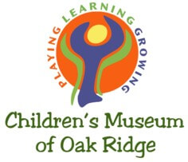
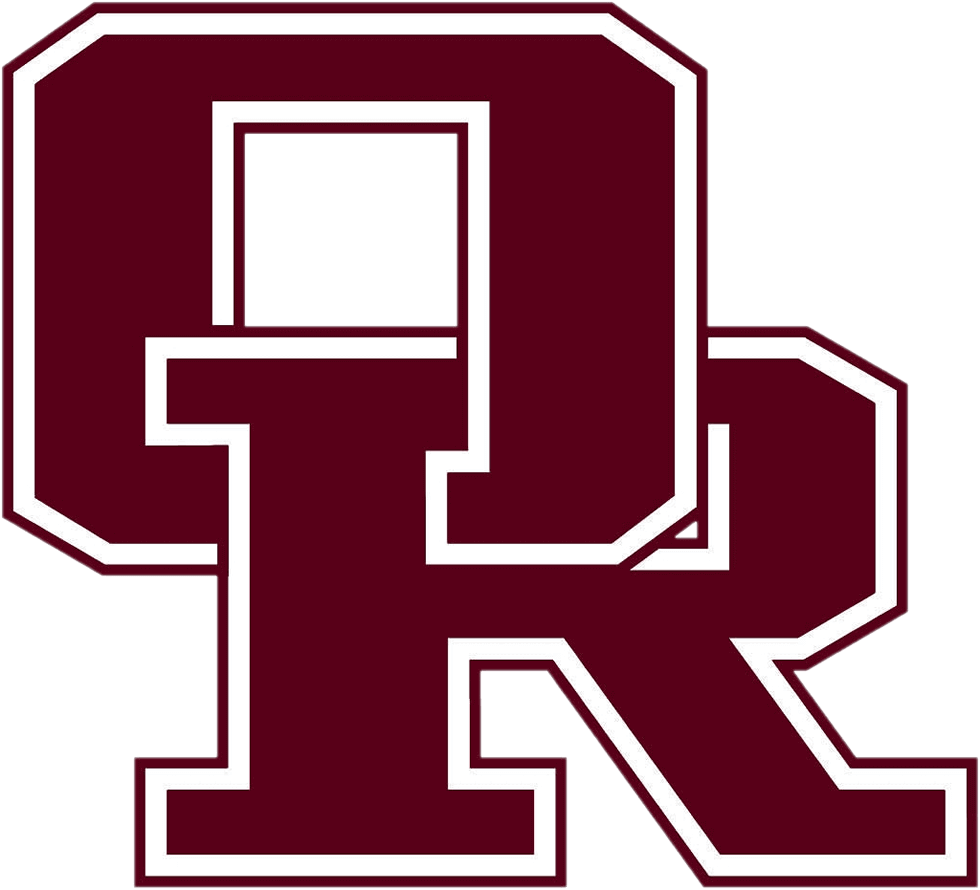
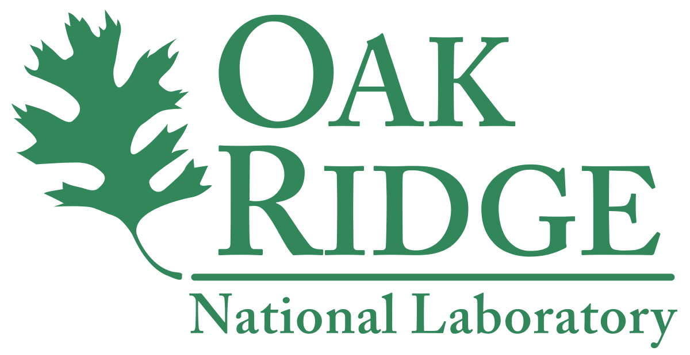
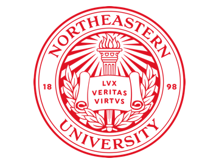

During these three years, I volunteered as a summer camp assistant. Kids from preK to 4th grade participated in these camps, so I helped with supervising and also helped with maintenance such as painting, repairs, cleaning, and gardening.

These four years of high school gave me a great education, while also creating great memories. Clubs and Activities I were involved in included Math Club, Scholars Bowl, Model UN, Orchestra, and Varsity Soccer.
I participated in several state math conventions, placing in several competitions.
I was the concertmaster for 3 years, qualified for All-State Orchestra (Top 36 violinist in Tennessee) for 3 years,
and was awarded the Maestro World at WorldStrides Onstage (New York, 2016)
and the Outstanding Concert Soloist at Festival Disney (Orlando, FL, 2017). Other honors include National Honors Society and National AP Scholar.
Relevant coursework and GPA can be found in my resume. Graduated with honors.

I was fortunate enough to be selected to research at the Center for Nanophase Materials Science at the Oak Ridge National Laboratory.
I worked on creating an Agent-Based Model that mimicked the foraging behavior of Black Soldier Fly Larvae. These larvae are of particular interest because of their ability to feed on organic waste, and in turn the larvae can be used as protein feeds. This process is environmentally friendly, so being able to understand eating behaviors can optimize the rate of recycling.
Further data revealed that these larvae form a vortice in the 2d plane when eating, which is reminiscent of natural phenomena behaviors like flocking and swarming. Therefore, Netlogo was used to create the Agent-Based model. Once the model was finished, a genetic algorithm was implemented to minimize the fitness function and find the optimal parameter set.
The main work for this project including models and reports can be found on my GitHub in the BSFL-ABM directory.
This research won 1st place in the computer science division and 4th place overall at the Southern Appalachian Science and Engineering Fair (affiliated regional fair of ISEF).

I have completed my first year of studies, and I have already made countless great memories, while also continuing to gain not only an outstanding education, but also learn how to live independently. I am currently pursuing a bachelors in a combined Computer Engineering and Computer Science degree, while also pursuing a minor in Mathematics.
The two main activities I have been involved in include Code4Community, a club focused on building free software to nonprofit organizations located throughout Boston, and the Northeastern Symphonic Orchestra.
Honors and awards include admittance into Northeastern's Honors College (~top 10%), making the Dean's list (College of Engineering), and being an Honors Early Research Award Recipient.
Relevant coursework and GPA can be found in my resume.

As a researcher in the Northeastern University Sociology and Anthropology Department, I focus on using a social network approach and data scrapping strategies to study the diffusion of innovative ideas on systemic change and gender equity among NSF ADVANCE grantees and beyond.
This includes collecting data through internet access of websites, journals, conference materials, organizing data through Google spreadsheets, and handling software programs for statistical, network analysis and visualization tools including coding in Python, MATLAB, and R.
Social Media